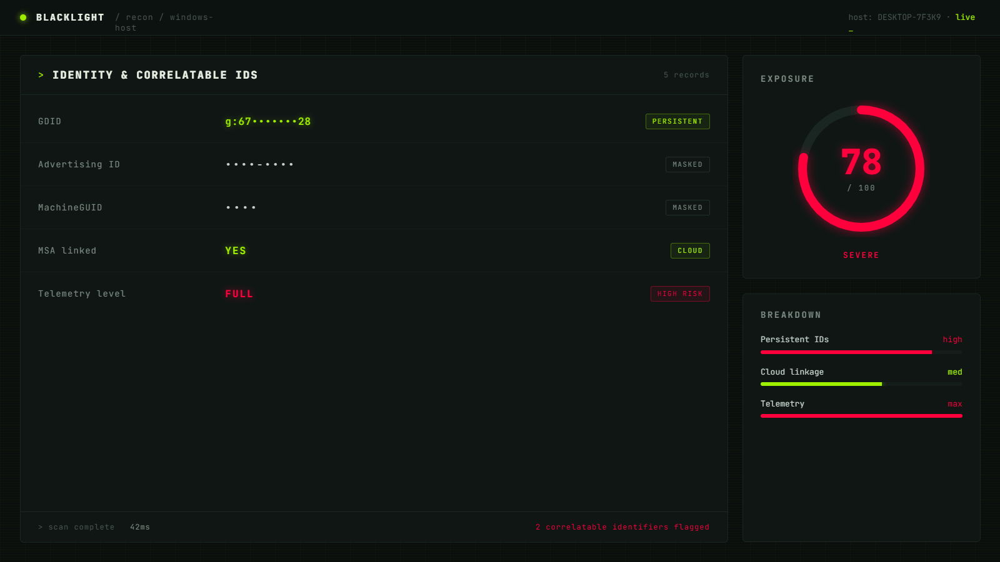
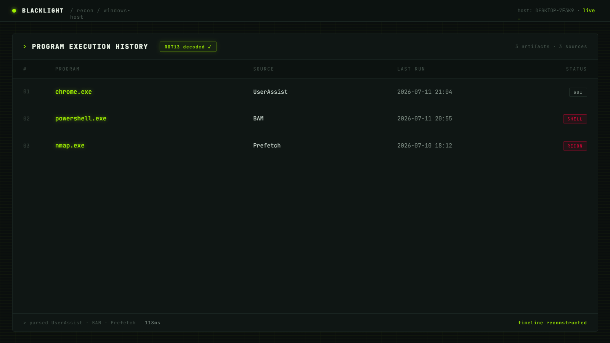
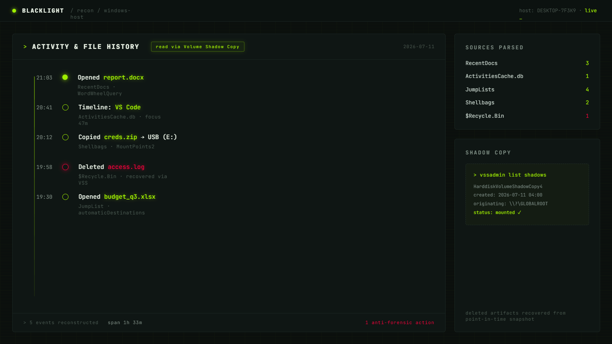
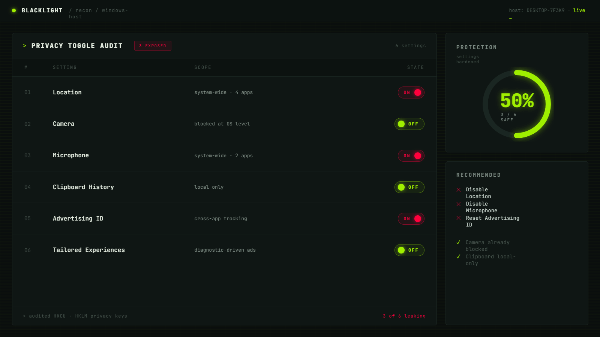

Windows quietly logs what you run, when, how much data you move, and stamps your machine with persistent IDs that outlast VPNs and updates. Blacklight reads it all back to you — your GDID, execution history, network usage, and every privacy toggle — on one local screen. Nothing leaves your machine.
Every Windows install maintains deep tracking layers most people never see. It records which programs you launched and when, how much network data each app moved, the files you opened, and the networks you joined.
The identifiers are the sharp edge. Windows assigns a persistent Global Device Identifier (GDID) — a device-level ID that stays fixed across updates and doesn't rotate when you change your IP. A VPN masks your network exit point; it does nothing about what the OS itself already knows and stores.
Most of this is buried in obscure registry hives (IdentityCRL\ExtendedProperties\LID) and locked databases (SRUDB.dat, ActivitiesCache.db). Blacklight is a local-first mirror — it's not an exploit, it just surfaces what your machine already stores about you.




Blacklight reads and decodes the same class of local artifacts used in real-world Windows forensics — all read-only, all local.
The persistent device identifier that stays fixed across updates and VPN changes.
HKCU\SOFTWARE\Microsoft\IdentityCRL\ExtendedProperties\LID
Read the full breakdown →
System Resource Usage Monitor — per-app run history plus how much network data each app moved.
SRUDB.dat
A ROT13-obfuscated registry log of the programs you've launched, decoded into plain text.
NTUSER.DAT → UserAssist
Background Activity Moderator last-run timestamps, plus Prefetch's launch cache that doubles as a run log.
bam\State · C:\Windows\Prefetch
Advertising ID, location, camera, mic, clipboard history, and your diagnostic-data (telemetry) level.
Settings → Privacy & security
local & read-only.
Nothing is uploaded, ever.
› *Some artifacts (SRUM, certain registry hives) require running as Administrator. Locked databases are read safely via Volume Shadow Copy — no system files are modified.
See exactly what Windows records about you — 100% locally, free, and open source. While you're here, star the repo to help shape which artifacts get surfaced next.